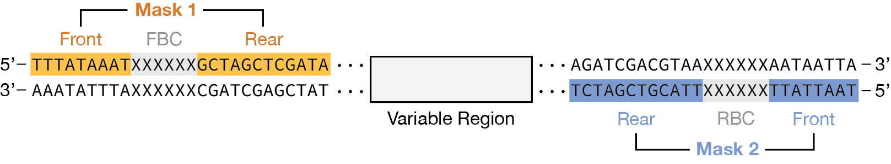

Demultiplexing & Analysis
After sequencing your pooled, barcoded library, the uSort-M CLI assigns reads to specific wells, generates per-well consensus sequences, and performs variant calling. The pipeline uses Dorado for barcode demultiplexing with the LevSeq barcode system, minimap2 for reference alignment, and samtools for consensus generation.
Overview
The analysis workflow consists of three main steps:
- Demultiplexing (
usortm demux): Assign reads to wells via LevSeq barcodes, align to references, generate per-well consensus - Hit picking (
usortm pick): Generate cherry-picking lists for Integra ASSIST PLUS robots - Reporting (
usortm report): Generate QC reports, plate maps, and coverage statistics
Pipeline Stages
The usortm demux command runs a multi-stage pipeline:
- Reference alignment: Align reads to your variant library with minimap2 to determine read direction
- Strand splitting: Separate forward and reverse reads (required because LevSeq barcodes NB13–NB96 and RB13–RB96 are reverse complements)
- Forward barcode (FBC) demux: Dorado identifies the forward barcode (96 barcodes = plate columns)
- Reverse barcode (RBC) demux: Dorado identifies the reverse barcode (4 per plate = plate quadrants)
- Well mapping: Combine FBC + RBC assignments to map each read to a 384-well plate position
- Consensus & variant calling: Generate per-well consensus sequences via samtools and identify variants
Prerequisites
The demux pipeline requires three external tools (see Getting Started for installation):
| Tool | Min Version | Purpose |
|---|---|---|
| dorado | 1.3+ | Barcode demultiplexing |
| minimap2 | 2.20+ | Reference alignment |
| samtools | 1.16+ | BAM processing & consensus |
usortm auto-discovers dorado in common locations (~/Downloads/dorado-*/bin/, ~/.dorado/bin/). You can also set DORADO_PATH, MINIMAP2_PATH, or SAMTOOLS_PATH environment variables.
Input Files
Before running the CLI, ensure you have:
1. Sequencing Data (FASTQ)
Raw sequencing reads in FASTQ format from Plasmidsaurus, ONT, or other long-read platforms:
# Plain or gzipped FASTQ
reads.fastq
reads.fastq.gz2. Library CSV or Reference FASTA
Provide your variant library for reference alignment and variant calling. You can use either format:
Option A: Library CSV (recommended — auto-converted to reference FASTA):
Name,Sequence
K44A,ATGGCTAAAGGTGCAGAACTGTTTACCGGT...
G45A,ATGGCTAAAGGTGAAGCACTGTTTACCGGT...
WT,ATGGCTAAAGGTGAAGAACTGTTTACCGGT...Option B: Multi-entry reference FASTA (one entry per variant):
>K44A
ATGGCTAAAGGTGCAGAACTGTTTACCGGT...
>G45A
ATGGCTAAAGGTGAAGCACTGTTTACCGGT...3. Project Directory
If you created a project with usortm plan, the project directory contains metadata and barcode config:
my_project/
├── usortm_project.json # Project state and parameters
├── variants.csv # Variant list
├── mask_config.toml # Barcode flanking sequences (editable)
├── barcodes/ # Barcode assignments
└── sorting_instructions.mdRunning Demultiplexing
Basic Usage
# Using a library CSV (auto-generates reference FASTA)
usortm demux my_project/ --fastq reads.fastq --library-csv variants.csvOr with a pre-built reference FASTA:
usortm demux my_project/ --fastq reads.fastq --reference reference.fastaOptions
# Custom mask sequences for a different plasmid backbone
usortm demux my_project/ \
--fastq reads.fastq \
--library-csv variants.csv \
--mask-config custom_masks.toml
# Adjust quality thresholds
usortm demux my_project/ \
--fastq reads.fastq \
--library-csv variants.csv \
--min-reads 50 \
--min-fraction 0.7
# Use multiple CPU cores for faster alignment
usortm demux my_project/ \
--fastq reads.fastq \
--library-csv variants.csv \
--threads 8See CLI Reference for all available options.
Mask Configuration
The barcode mask (flanking) sequences anchor Dorado's barcode search to a defined location in the read. It accepts two sets of masks corresponding to the forward and reverse barcodes, as shown in the read diagram below.

To provide mask sequences for your vector,
edit mask_config.toml in your project directory (generated by usortm plan)
or pass a custom file with --mask-config. Mask sequences oriented 5' to 3' on the relevant strand,
as shown in the diagram, with Mask 1 sequences using the top strand and Mask 2 using the bottom strand.
# mask_config.toml
[fbc]
mask1_front = "AATATAAATT"
mask1_rear = "CTGAGATACCTACAGCGTGAGC"
mask2_front = "CAAGTGAGAAATCACCATGAGTGACG"
mask2_rear = "ATAATTTATA"
[rbc]
mask1_front = "TATAAATTAT"
mask1_rear = "CGTCACTCATGGTGATTTCTCACTTG"
mask2_front = "GCTCACGCTGTAGGTATCTCAG"
mask2_rear = "AATTTATATT"
# Optional: override Dorado scoring parameters (rarely needed)
# [scoring]
# max_barcode_penalty = 12
# min_barcode_penalty_dist = 3
# min_flank_score = 0.9Scoring Parameters
The [scoring] section in mask_config.toml controls Dorado's barcode
classification thresholds. The defaults work well for most experiments. Adjust these only if
you observe low barcode classification rates—for example, lowering min_flank_score
may help with noisy reads, while increasing max_barcode_penalty allows more mismatches.
Output Files
The demux command generates output in project/demux_output/:
demux_output/
├── demux_summary.json # Per-stage read count funnel
├── well_assignments.csv # Per-well variant calls
├── read_df.csv # Per-read barcode + reference assignments
├── well_df.csv # Per-well summary with consensus & variants
├── dorado_config/ # Generated Dorado TOML + FASTA configs
│ ├── levseq_fbc.toml
│ ├── levseq_fbc.fasta
│ ├── levseq_rbc.toml
│ └── levseq_rbc.fasta
├── alignment/ # minimap2 alignment + strand-split FASTQs
├── fbc/ # Dorado forward barcode demux output
├── rbc/ # Dorado reverse barcode demux output
└── reference_fasta/ # Per-variant reference FASTAs for consensusCLI Summary Table
After demultiplexing completes, the CLI displays a per-stage funnel showing how reads progress through the pipeline. Each stage reports both the absolute count and the percentage of input reads:
┌───────────────────────────────────────────┐
│ Demultiplexing Summary │
├────────────────────┬──────────────────────┤
│ Metric │ Value │
├────────────────────┼──────────────────────┤
│ Input reads │ 2,400,000 │
│ Aligned │ 2,100,000 (87.5%) │
│ Demuxed (FBC+RBC) │ 1,850,000 (77.1%) │
│ Assigned to wells │ 1,650,000 (68.8%) │
│ Wells with data │ 725 │
│ Wells ≥100 reads │ 680 │
└────────────────────┴──────────────────────┘Demux Summary (demux_summary.json)
Machine-readable per-stage read counts matching the CLI funnel:
{
"input_reads": 2400000,
"aligned_reads": 2100000,
"demuxed_reads": 1850000,
"assigned_reads": 1650000,
"wells_with_data": 725,
"wells_passing": 680
}Well Assignments (well_assignments.csv)
Per-well variant calls with read depth and consensus quality:
plate,well,reads,variant,consensus_fraction
1,A1,487,K44A,0.95
1,A2,312,G45A,0.88
1,B1,156,WT,0.92Per-Read Table (read_df.csv)
Detailed per-read assignments including forward barcode (FBC), reverse barcode (RBC), reference name, and mapped well position. Useful for debugging classification rates or building custom analyses.
Per-Well Summary (well_df.csv)
Aggregated well-level statistics including read depth, dominant reference, consensus fraction, CIGAR-based variant calls, and consensus check status.
Generating Reports
Create summary reports from demux results:
usortm report my_project/
# Select specific format
usortm report my_project/ --format html
usortm report my_project/ --format csv
usortm report my_project/ --format jsonOutput files are saved to project/report/:
| Format | Files | Contents |
|---|---|---|
| HTML | summary.html |
Interactive dashboard with project overview, demux funnel, variant recovery, and read depth statistics |
| CSV | plate_maps.csvfinal_mapping.csvmissing_variants.csv |
Plate maps with well–variant assignments, best-well-per-variant mapping, and list of unrecovered variants |
| JSON | report.json |
Machine-readable report with project parameters, demux summary, variant statistics, and library coverage |
Generating Pick Lists
Create a cherry-picking list for sequence-verified clones:
# Pick one well per unique variant (default)
usortm pick my_project/
# Pick all wells (including duplicates)
usortm pick my_project/ --all-hits
# Custom transfer volume
usortm pick my_project/ --volume 3.0
# Target 96-well plates instead of 384
usortm pick my_project/ --target-format 96The pick list is ordered to match your input library CSV, so variants appear in the same order you defined them. For each variant, the well with the highest read count is selected.
Output format (semicolon-delimited CSV for Integra ASSIST PLUS):
SampleID;SourcePlateID;SourceWell;TargetPlateID;TargetWell;TransferVolume
K44A;1;K23;0;A1;5.0
G45A;1;A11;0;B1;5.0
T203Y;2;C5;0;C1;5.0Quality Control
Expected Metrics
| Metric | Good | Acceptable | Poor |
|---|---|---|---|
| Well assignment rate | >70% | 50-70% | <50% |
| Wells with data | >70% | 50-70% | <50% |
| Mean reads per well | >50 | 20-50 | <20 |
| Variant recovery | >90% | 75-90% | <75% |
Troubleshooting
| Problem | Possible Cause | Solution |
|---|---|---|
| Low assignment rate | Incorrect mask sequences for your backbone | Edit mask_config.toml to match your plasmid flanking regions |
| Few wells with data | Low sequencing depth, PCR failures | Check sequencing QC, re-run with more cycles |
| Uneven read distribution | Pooling bias, amplification artifacts | Normalize inputs before pooling, reduce PCR cycles |
| Low alignment rate | Reference mismatch, wrong library CSV | Verify reference FASTA matches your actual library sequences |
| Multiple variants per well | Contamination, poor FACS gating | Check single-cell mode, use purity gating |
| Low variant recovery | Library skew, insufficient oversampling | Increase fold sampling, check transformation scale |
Complete Workflow Example
# 1. Plan experiment
usortm plan variants.csv --output my_experiment/
# 2. (Optional) Edit mask_config.toml if using a non-cutinase backbone
# vi my_experiment/mask_config.toml
# 3. Perform wet lab steps (assembly, sorting, barcoding, sequencing)
# ...
# 4. Demultiplex sequencing data
usortm demux my_experiment/ \
--fastq sequencing_data.fastq.gz \
--library-csv variants.csv \
--threads 8
# 5. Generate hit-picking list
usortm pick my_experiment/
# 6. Generate comprehensive report
usortm report my_experiment/
# 7. Review report
open my_experiment/report/summary.htmlPython API
For programmatic access and custom analysis pipelines, see the Python API documentation.